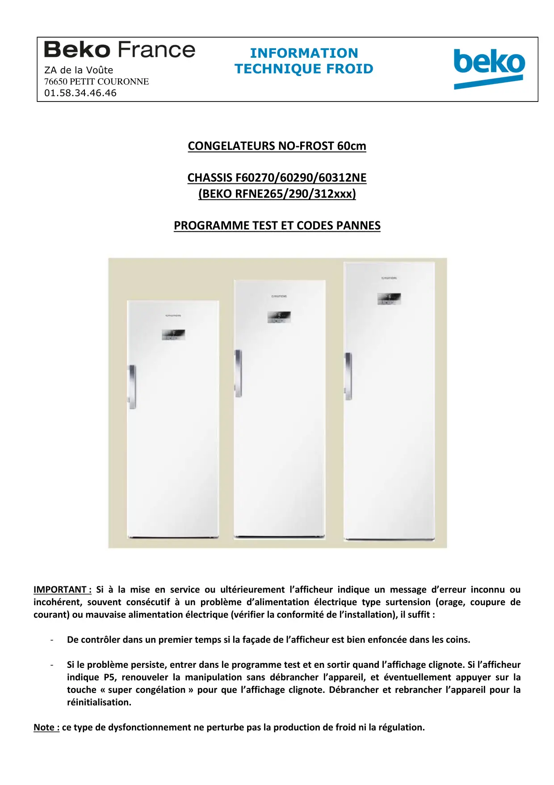
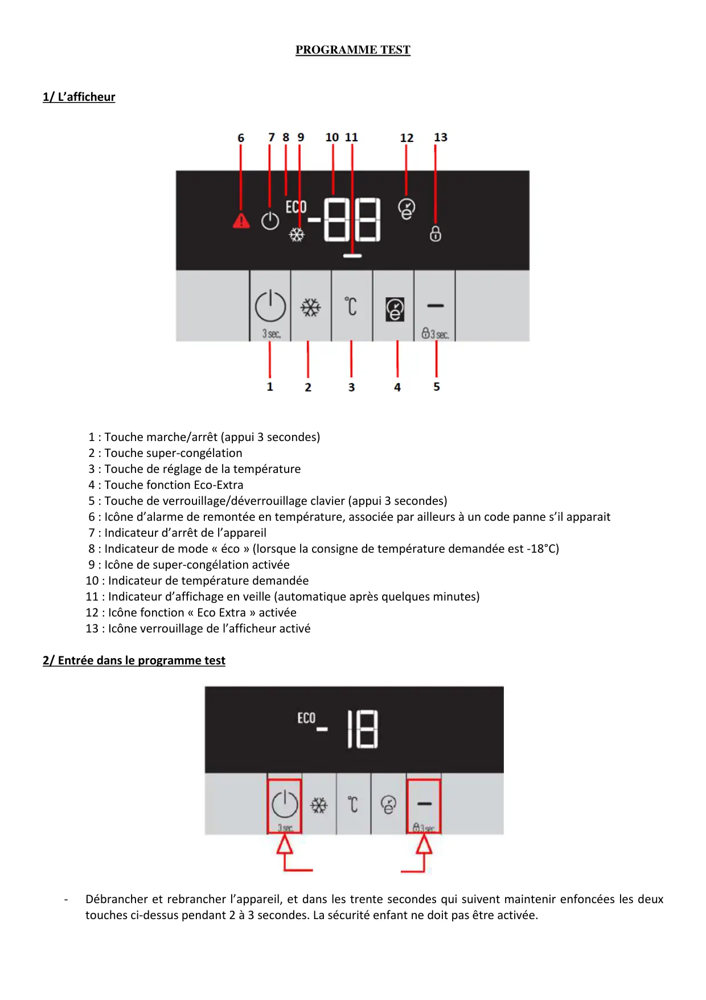
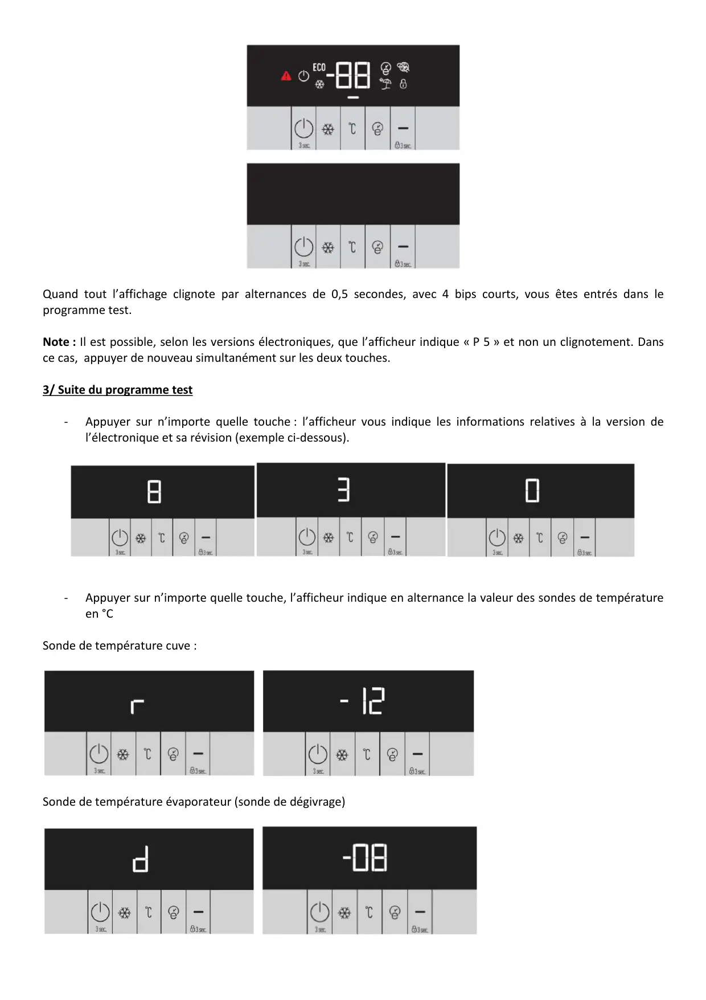
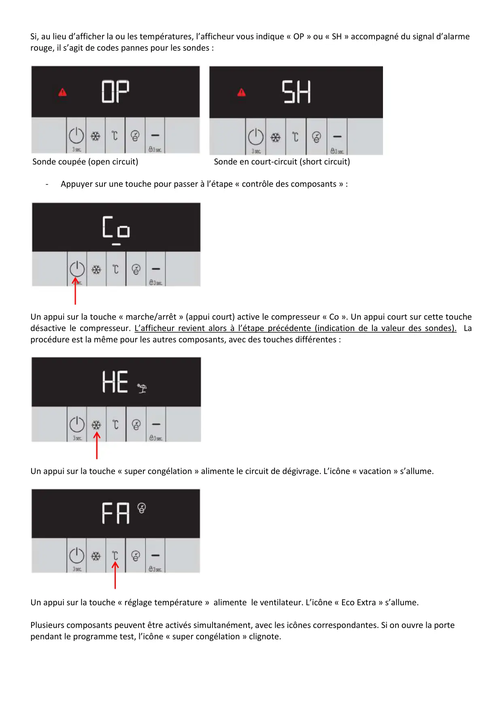
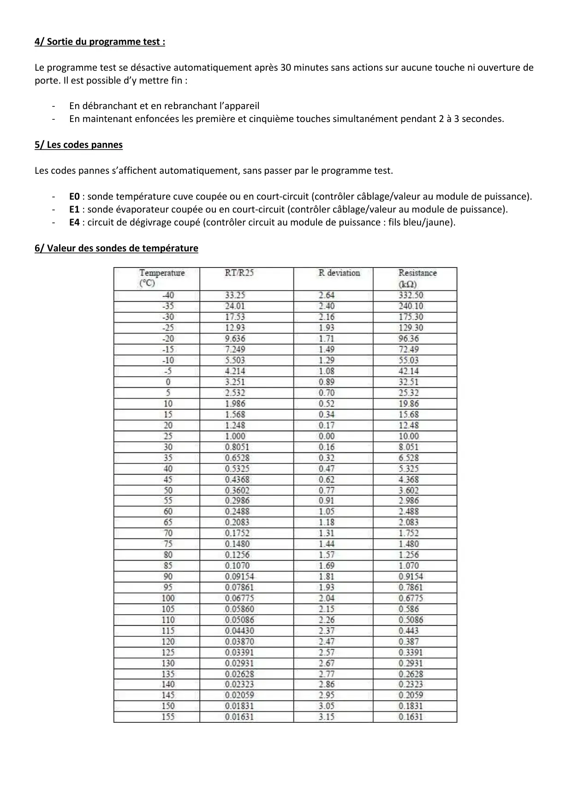

ProgrTest CGL BEKO RFNE

CONGELATEURS NO-FROST 60cmCHASSIS F60270/60290/60312NE(BEKO RFNE265/290/312xxx)PROGRAMME TEST ET CODES PANNESIMPORTANT : Si à la mise en service ou ultérieurement l’afficheur indique un message d’erreur inconnu ouincohérent, souvent consécutif à un problème d’alimentation électrique type surtension (orage, coupure decourant) ou mauvaise alimentation électrique (vérifier la conformité de l’installation), il suffit :-De contrôler dans un premier temps si la façade de l’afficheur est bien enfoncée dans les coins.-Si le problème persiste, entrer dans le programme test et en sortir quand l’affichage clignote. Si l’afficheurindique P5, renouveler la manipulation sans débrancher l’appareil, et éventuellement appuyer sur latouche « super congélation » pour que l’affichage clignote. Débrancher et rebrancher l’appareil pour laréinitialisation.Note : ce type de dysfonctionnement ne perturbe pas la production de froid ni la régulation.INFORMATIONZA de la Voûte TECHNIQUE FROID76650 PETIT COURONNE01.58.34.46.46
1 / 5
PROGRAMME TEST1/ L’afficheur1 : Touche marche/arrêt (appui 3 secondes)2 : Touche super-congélation3 : Touche de réglage de la température4 : Touche fonction Eco-Extra5 : Touche de verrouillage/déverrouillage clavier (appui 3 secondes)6 : Icône d’alarme de remontée en température, associée par ailleurs à un code panne s’il apparait7 : Indicateur d’arrêt de l’appareil8 : Indicateur de mode « éco » (lorsque la consigne de température demandée est -18°C)9 : Icône de super-congélation activée10 : Indicateur de température demandée11 : Indicateur d’affichage en veille (automatique après quelques minutes)12 : Icône fonction « Eco Extra » activée13 : Icône verrouillage de l’afficheur activé2/ Entrée dans le programme test-Débrancher et rebrancher l’appareil, et dans les trente secondes qui suivent maintenir enfoncées les deuxtouches ci-dessus pendant 2 à 3 secondes. La sécurité enfant ne doit pas être activée.
2 / 5
Quand tout l’affichage clignote par alternances de 0,5 secondes, avec 4 bips courts, vous êtes entrés dans leprogramme test.Note : Il est possible, selon les versions électroniques, que l’afficheur indique « P 5 » et non un clignotement. Dansce cas, appuyer de nouveau simultanément sur les deux touches.3/ Suite du programme test-Appuyer sur n’importe quelle touche : l’afficheur vous indique les informations relatives à la version del’électronique et sa révision (exemple ci-dessous).-Appuyer sur n’importe quelle touche, l’afficheur indique en alternance la valeur des sondes de températureen °CSonde de température cuve :Sonde de température évaporateur (sonde de dégivrage)
3 / 5
Si, au lieu d’afficher la ou les températures, l’afficheur vous indique « OP » ou « SH » accompagné du signal d’alarmerouge, il s’agit de codes pannes pour les sondes :Sonde coupée (open circuit) Sonde en court-circuit (short circuit)-Appuyer sur une touche pour passer à l’étape « contrôle des composants » :Un appui sur la touche « marche/arrêt » (appui court) active le compresseur « Co ». Un appui court sur cette touchedésactive le compresseur. L’afficheur revient alors à l’étape précédente (indication de la valeur des sondes). Laprocédure est la même pour les autres composants, avec des touches différentes :Un appui sur la touche « super congélation » alimente le circuit de dégivrage. L’icône « vacation » s’allume.Un appui sur la touche « réglage température » alimente le ventilateur. L’icône « Eco Extra » s’allume.Plusieurs composants peuvent être activés simultanément, avec les icônes correspondantes. Si on ouvre la portependant le programme test, l’icône « super congélation » clignote.
4 / 5
4/ Sortie du programme test :Le programme test se désactive automatiquement après 30 minutes sans actions sur aucune touche ni ouverture deporte. Il est possible d’y mettre fin :-En débranchant et en rebranchant l’appareil-En maintenant enfoncées les première et cinquième touches simultanément pendant 2 à 3 secondes.5/ Les codes pannesLes codes pannes s’affichent automatiquement, sans passer par le programme test.-E0 : sonde température cuve coupée ou en court-circuit (contrôler câblage/valeur au module de puissance).-E1 : sonde évaporateur coupée ou en court-circuit (contrôler câblage/valeur au module de puissance).-E4 : circuit de dégivrage coupé (contrôler circuit au module de puissance : fils bleu/jaune).6/ Valeur des sondes de température
5 / 5